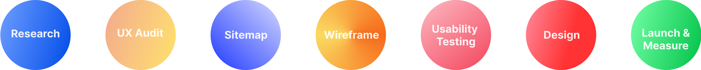
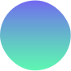
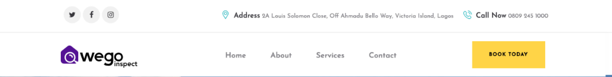
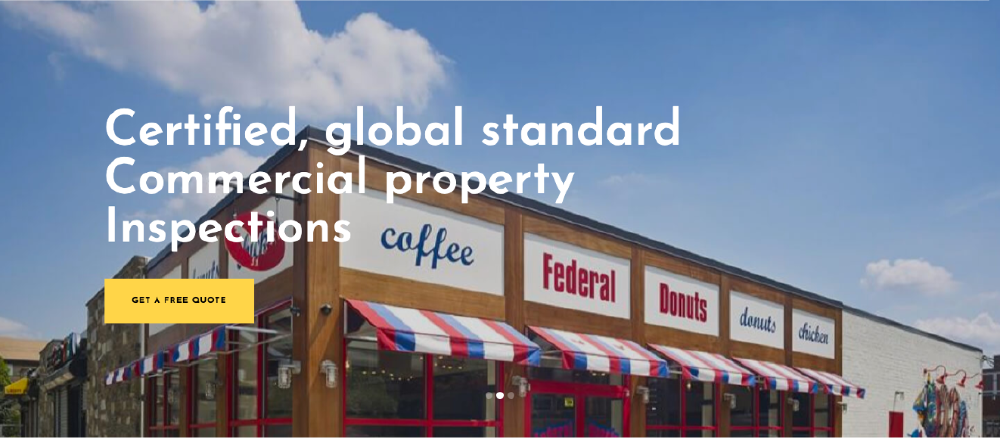
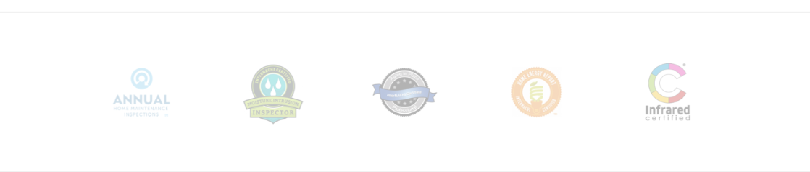
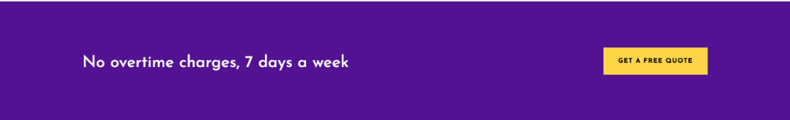
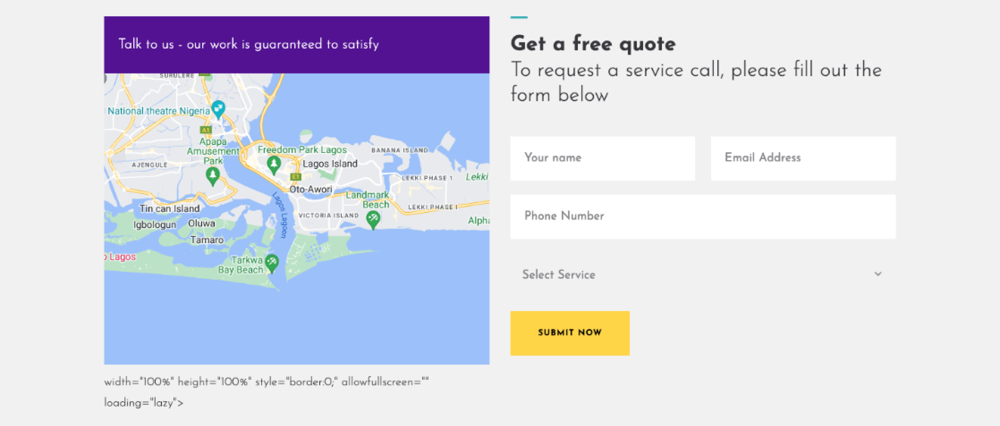
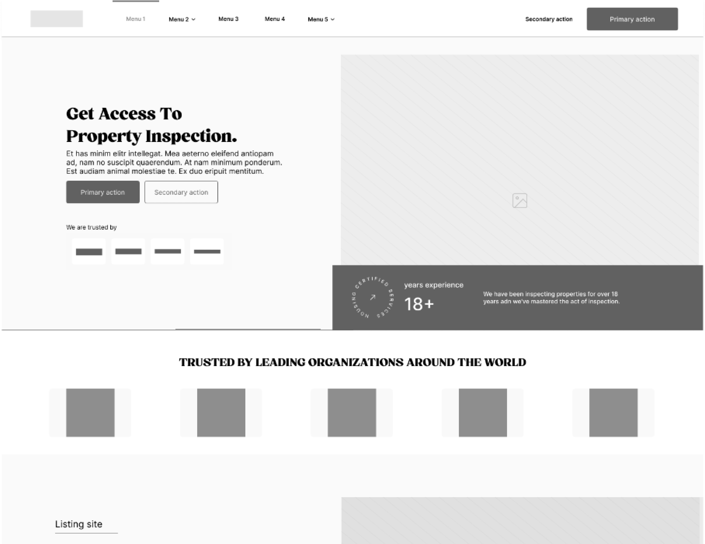
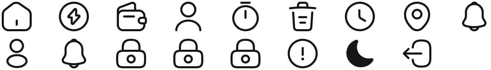

WegoInspect company is the premier tech-Driven Inspection service company in Africa and the First Gig-economy driven property inspection company in the world.
Research, wireframes, prototypes, UI Design, User flows, UI/UX Designer
Andriod & iOS
2 Weeks
Housing/ Estate
Project Overview
Nearly 62 million Nigerians are struggling to find housing due to a number of issues, such as the documentation processes, subpar housing, dilapidated housing, insufficient planning policy execution, and a lack of education. When looking to buy or rent a property, the user typically faces the issue of verifying the veracity of housing. Due to a lack of up-to-date information, people frequently fall prey to illegal structures, subpar homes, and decaying conditions of homes. Although some listing systems include information on these homes, most don't check the information regarding the homes' current conditions or supply up-to-date data on the housing environment.
My role is to design the website to which allows users to request information about a property. I conducted user interviews, user research survey, UX Audits, information architecture, and digital wireframes, low and high fedelity protoytying, conducting usability studies, iterating on designs, defining UX metrices, defining busniess KPI.
Figma
Google Forms
Figjam
Google sheets
Whatsapp Video call

After Effects
Adobe Encoder
Validation
The users find it difficult to verify the authenticity of housing property or outlet they want to purchase on property listing platforms. So the redesign is center around improving the existing site and solving the problem of house fraud.
Project Vision / Goal Statement.
The goal is to have a redesigned website which let users request inspection service to help them inspect their potential dream house or shortlet or estate. which will affect how users purchase or rent houses, by giving them the ability to get the detailed information of the house to be bought or rented.
We will measure effectiveness by analizing the number of users satisfied with tht service.
What I did
Here’s an overview of the design process used to improve the existing design and experince and also factoring the new features into the new website. I started with researching the problems users may face and interviewing the stackholder on why a redesign is essental, then I defined solutions concepts, creating user designs, and creating an interactive prototype.
User research
I learned alot about problems during thr research and found that users have similar behavoius and pain poinsts. Organizing everything helped me narrow it down to some points, from which I creaete a list of features that can help users.
87.5%
Participants prefer using dumping your wastes in waste banks to doorstep waste collection.
62.5%
Participants would like to know where their waste ends.
100%
Participants haven’t heard of any waste managment platform.
Here are the expected mood statments to consider when design the website, user want these moods when interacting with the website.
 Involvement
Imagery & vidoes
Colourful
Trendy
Trust
Intuitive navigation
Clean
Minimal / Simple
Bright
Mordern
Optimistic
Relatable
House Seekers
Housing agents
Listing sites
This procedure was used to pinpoint the problems with the current website's user experience and restructure them into the creation of the new website, which would be created to improve user activities. Here are a some of the areas that I found to have UX problems: the header, hero, certificed, call to action (CTA), and the sections for "Get free quotation."
One of the UX issue here is the ux copy (Book Today) in the CTA, it doesn’t inform the users on what action they want to perform. The ux copy should focus more on the important action users will take such as “Request Inspection” or “Get Started”. Also, the CTA leads to the contact page which could be frustrating for a user that wants to book an inspection request.
Statistically, 40% of users do not go past the Hero section, which means the brand has to capture the user attention at thi level. The courosal used do not support users interaction, that it there are no arrows or pointers to navigate through the slides if one is missed. At a glance the website should earn users’ trust by showing “social proof” such as years of experience or pratices or trusted companies or partners. The call to action button “GET A FREE QUOTE” doesn’t lead any action page.
These set of images don’t inform the users what they mean or what they stand for. The context wasn’t provided, it should have a header letting users know the brand is certified with the brands it has listed out. Also they opacity on them makes it difficult to see.
The “No overtime charges, 7 days a week” copy is without context, also the call to action button isn’t informing the user what quote they are getting, which also leads to the contact page.
Due to the visual aesthetic of the "Select Service" form not following the previous text field, it does not appear to be a dropdown. Additionally, I found that the section's button was showing HTML code, which appears odd.
This process was done to organize, structure, and label content in an effective and sustainable way to ensure user find and complete various taks, also to better understand the project scope.
Lo-fi Wireframe
By creating wireframe, it helps to make content more effective and readable and bring clarity. I made tens of wireframes to lay out layout content and functionality on a page which takes into account user needs and user journeys.
Visual style is an essential part of a project as it helps create a standardized system of colors, fonts, buttons, text input, and many other components that will be combined and displayed on user screens.
Barlow is one of the popular design fonts for creating mobile applications, it’s a sans-serif typeface which is readability friendly and brings harmony to the design and makes it easy to understand.
Ab Bb Cc Dd Ee Ff Gg Hh Ii Jj Kk Ll Mm Nn Oo Pp Qq Rr Ss Tt Uu Vv Ww Xx Yy Zz
Ab Bb Cc Dd Ee Ff Gg Hh Ii Jj Kk Ll Mm Nn Oo Pp Qq Rr Ss Tt Uu Vv Ww Xx Yy Zz
Ab Bb Cc Dd Ee Ff Gg Hh Ii Jj Kk Ll Mm Nn Oo Pp Qq Rr Ss Tt Uu Vv Ww Xx Yy Zz
Colors are used to influence how users think and behave towards a brand, and how they perceive some details. The color indigo signifies integrity and also is related to devotion to helping others, while the mustard energizes and stimulates the mind and body. As a warm color mustard can trigger feelings of warmth, it can also increase positive emotions and general feelings of optimism.
I made use of Iconsax, they provide a large range of illustrative icon that are explanatory which make them suitable to represent complex areas in design or words.
Final Design
I built a styleguide (which includes the illustrations, typography, colors, and library components) to bring the app design to life by transforming the wireframe into visual designs. This was done in order to make the design aesthetically appealing to users.
Final Design
Making a prototype enables me and other stakeholders to test and see how the application will look before handing it off to the technical team for development and to experience the design interaction.
Test Phase
I tested the prototype with a few representative users after the visual design was finished to assess how user-friendly the program is. I saw the participants' use of the program while they completed the following task during the test, which was performed via zoom video calls.
The participants found it rather simple to navigate the app. They liked the user interface and the subsequent inputs.
User Feedback
- Request for Quote can be a pop modal when clicked to avoid long scroll to action.
- Make certified badges clickable for users to view certificates.
- Videos should have a progress bar.
A11y Guidlines
By creating user flow, it helps us deliver a great product experince. We made tens of wireframes to lay out layout content and functionality on a page which takes into account user needs and user journeys.
Scheduling Bills
Used icons to help make navigation easier.
Iconography
Used icons to help make navigation easier.
Complex Navigation
Used detailed imagery for each utility bill service to help all users better understand the designs.